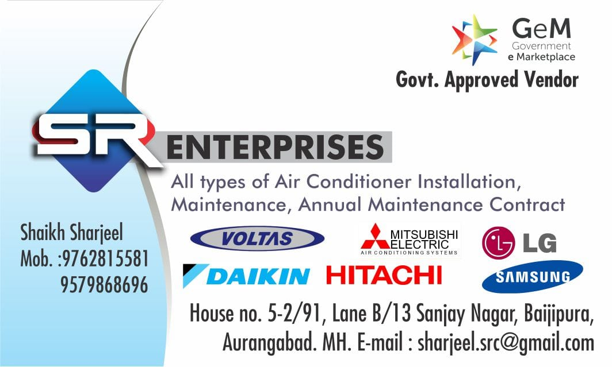
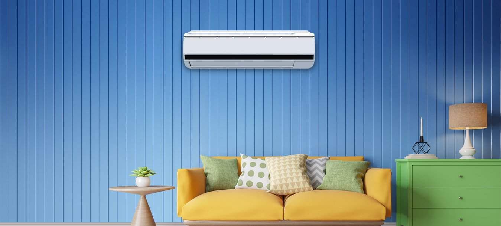
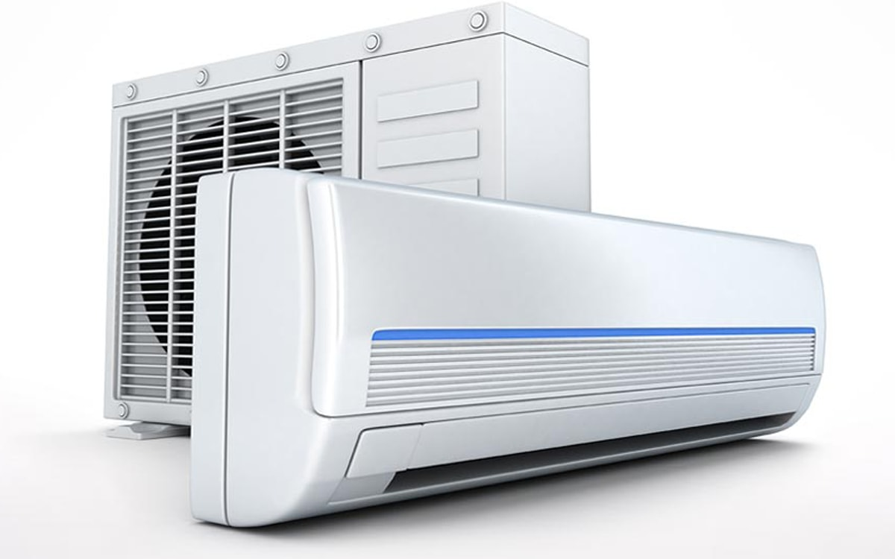

SR Enterprises is a trusted local service provider offering AC repair, AC installation, AC servicing, washing machine repair and refrigerator repair in Aurangabad and Chhatrapati Sambhajinagar.
SR Enterprises is a trusted and experienced home appliance repair service provider in Aurangabad and Chhatrapati Sambhajinagar, Maharashtra. We are best known for professional AC repair, AC installation and AC servicing with fast doorstep support.
Our skilled technicians handle all types of air conditioners including split AC, window AC and inverter AC. From cooling problems and gas refilling to electrical and PCB issues, we deliver reliable and long-lasting repair solutions using genuine spare parts.
Along with AC services, SR Enterprises also provides dependable washing machine repair and refrigerator & fridge repair services in Aurangabad and Chhatrapati Sambhajinagar. We service all major brands with transparent pricing and customer satisfaction as our top priority.
With years of local experience, trusted reviews and professional workmanship, SR Enterprises has become a preferred choice for AC and appliance repair services in the region.
SR Enterprises – AC Repair & Appliance Service
House No 5, 2/91 Lane No B/13,
Near Dawood Masjid, Baijipura,
Sanjay Nagar, Mondha,
Aurangabad – 431001,
Maharashtra, India
SR Enterprises provides trusted doorstep AC and home appliance repair services across Aurangabad and Chhatrapati Sambhajinagar, Maharashtra.

We provide expert split AC repair services in Aurangabad and Chhatrapati Sambhajinagar for all major brands. Cooling issues, gas leakage, PCB faults, compressor problems and power issues are fixed using genuine spare parts.
Our window AC repair service in Aurangabad and Chhatrapati Sambhajinagar covers poor cooling, unusual noise, water leakage, thermostat problems and electrical faults with fast doorstep support.
We offer professional AC gas refilling services in Aurangabad and Chhatrapati Sambhajinagar with complete leak detection, pressure testing and correct refrigerant charging to restore cooling performance.
We provide safe and professional AC installation and uninstallation services in Aurangabad and Chhatrapati Sambhajinagar including proper mounting, copper piping, wiring and final testing.

Our AC servicing in Aurangabad and Chhatrapati Sambhajinagar includes deep cleaning of filters, coils, indoor and outdoor units, improving cooling efficiency and AC lifespan.
We repair and replace faulty AC components such as capacitors, thermistors, fan motors and PCBs using genuine spare parts in Aurangabad and Chhatrapati Sambhajinagar.
SR Enterprises provides reliable washing machine repair services in Aurangabad and Chhatrapati Sambhajinagar for fully automatic and semi-automatic machines, fixing spin, drainage and motor issues.
We offer professional refrigerator and fridge repair services in Aurangabad and Chhatrapati Sambhajinagar for single door, double door and frost-free refrigerators with fast diagnosis.
Low Price Guarantee
90 Days Warranty
Reliable Service
Genuine Parts